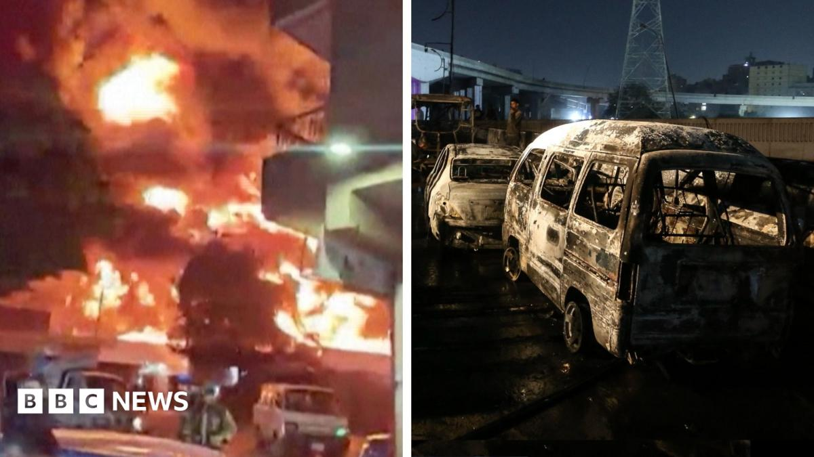

World · 26 Nov 2026
Thirty-one killed in massive fire as fuel tanker crashes on Cairo highway

Another 21 are injured after the tanker reportedly overturns on a busy ring road in the Egyptian capital.
Multiple independent publishers are reporting on the same development: Thirty-one killed in massive fire as fuel tanker crashes on Cairo highway.
The available reports place the development in the World category. The accounts were compared for agreement on the central event rather than simply shared names or broad topics.
One of the available reports describes the development this way: Another 21 are injured after the tanker reportedly overturns on a busy ring road in the Egyptian capital.
Readers should consult the linked source reports for additional context, updates and details that may change as the story develops.
Sources
This article was produced by the C. O. Eric AI Newsroom from the cited sources. It is published only after automated evidence and safety checks.